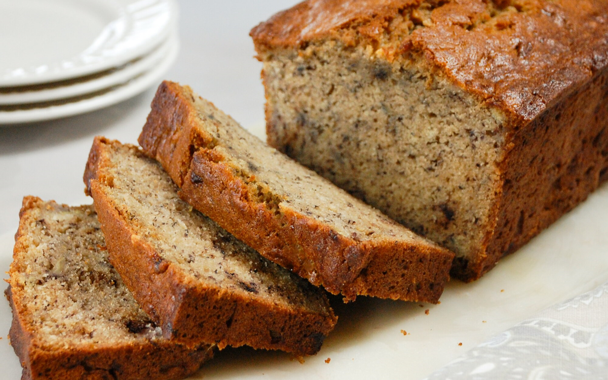

Banana Bread

Methods
- Preheat the oven to 350 degrees F (175 degrees C). Lightly grease a 9x5-inch loaf pan.
- Combine flour, baking soda, and salt in a large bowl. Beat brown sugar and butter with an electric mixer in a separate large bowl until smooth.
- Stir in eggs and mashed bananas until well blended.
- Stir banana mixture into flour mixture until just combined.
- Pour batter into the prepared loaf pan.
- Bake in the preheated oven until a toothpick inserted into the center comes out clean, about 60 minutes.
- Let bread cool in pan for 10 minutes, then turn out onto a wire rack to cool completely.
- Serve.